- Hacemos el makado. Primero, freímos en aceite de oliva las almendras. Retiramos y metemos el ajo en rodajas y el pan. Retiramos y metemos el perejil un segundo, sin picar. Después, lo metemos todo en un recipiente, echamos una pizca de azafrán, y batimos todo con un poco de caldo de pollo para que nos quede una pasta más o menos espesa.
- Pelamos unas patatas y las chascamos en trozos.
- Picamos la cebolla, y en el mismo aceite que hemos echado antes la sofreímos junto con un poco de cayena.
- Cuando la cebolla esté traslúcida, incorporamos las patatas con el pimentón. Las sofreímos un poco con la cebolla para que cojan sabor.
- Añadimos el majado, mezclamos, cubrimos todo con caldo de pollo, removemos. Salamos. Cocinamos a fuego medio-bajo durante alrededor de 45 minutos. Vamos probando y rectificamos de sal.
- Para acompañar, pochamos un huevo por comensal en el caldo, que se haga un poco.
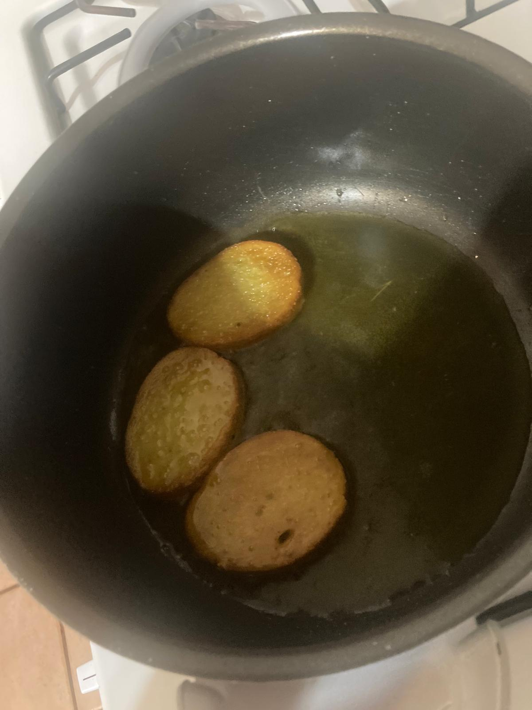 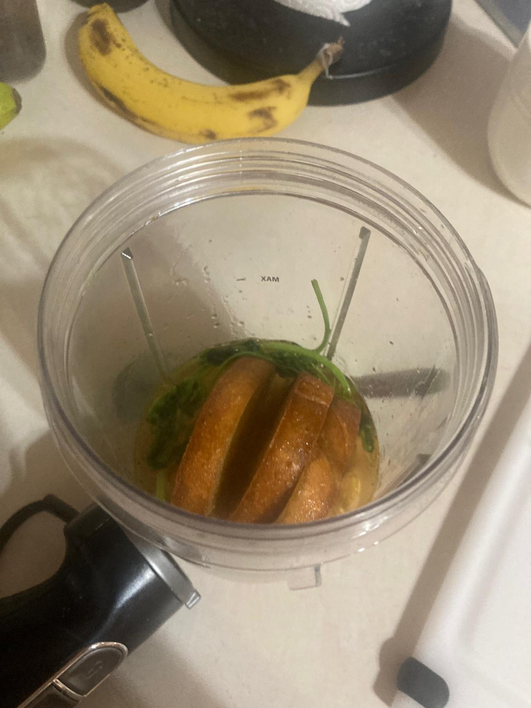

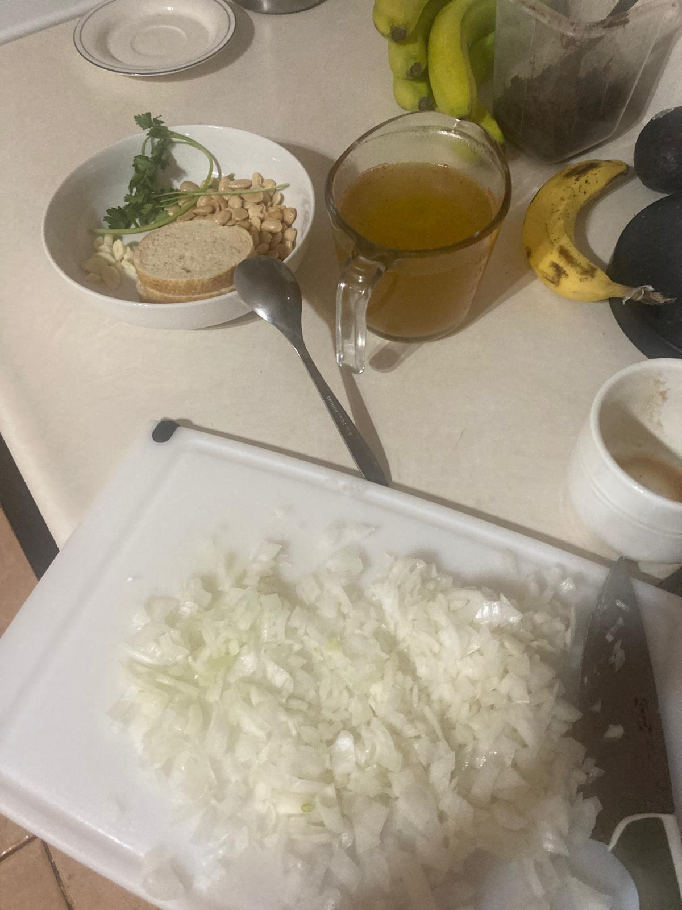 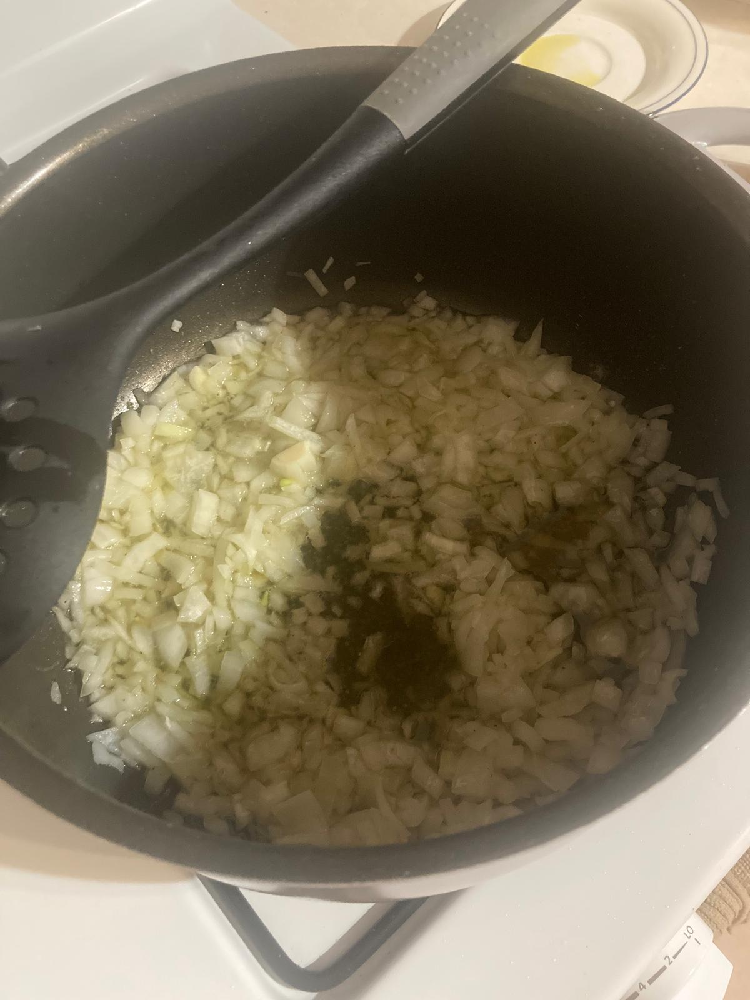 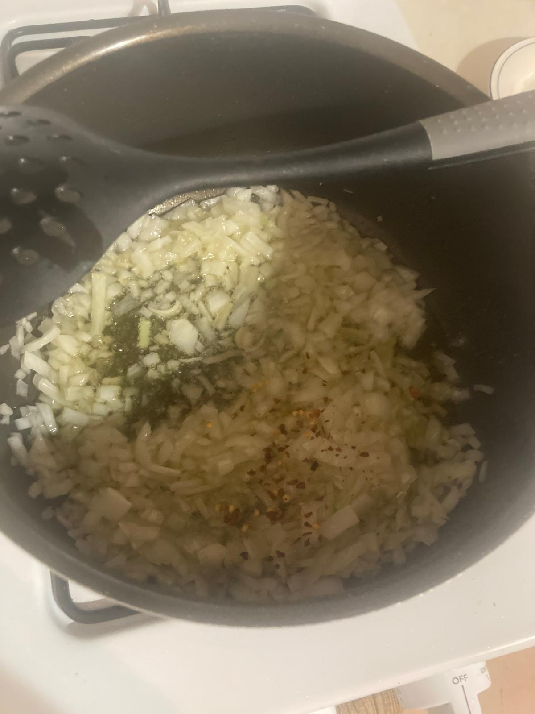
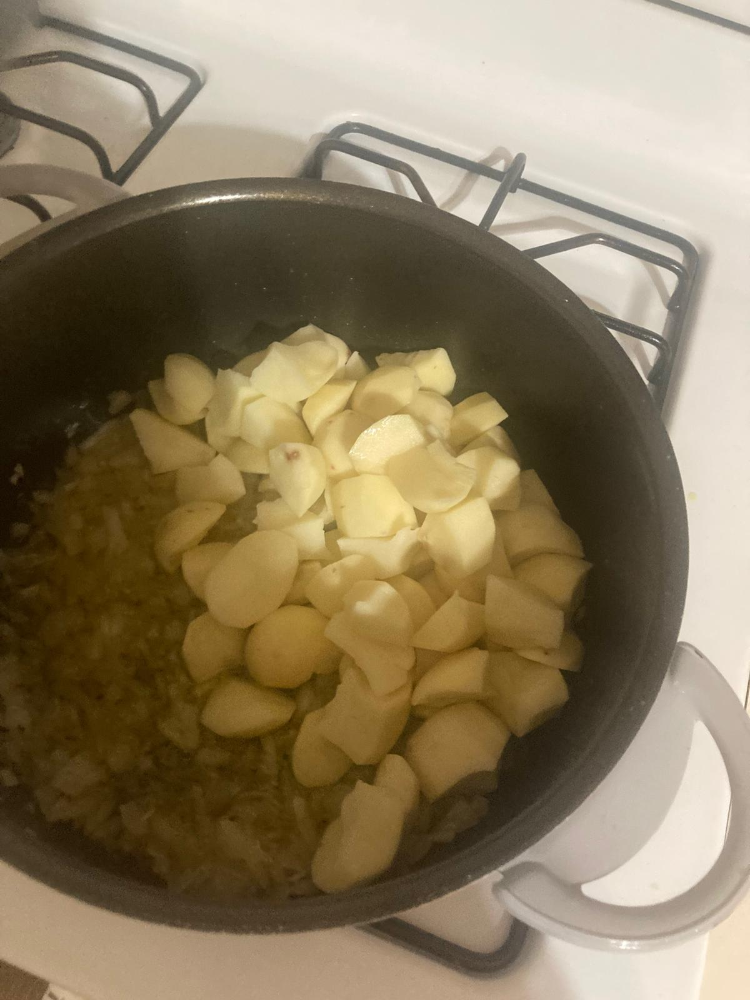 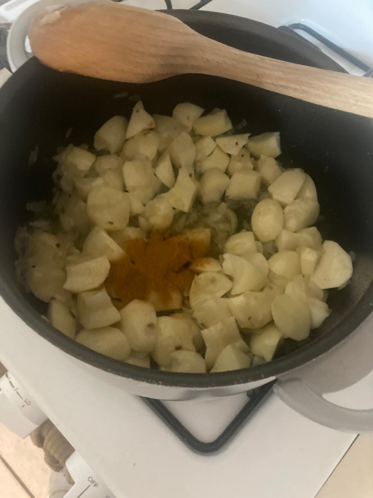
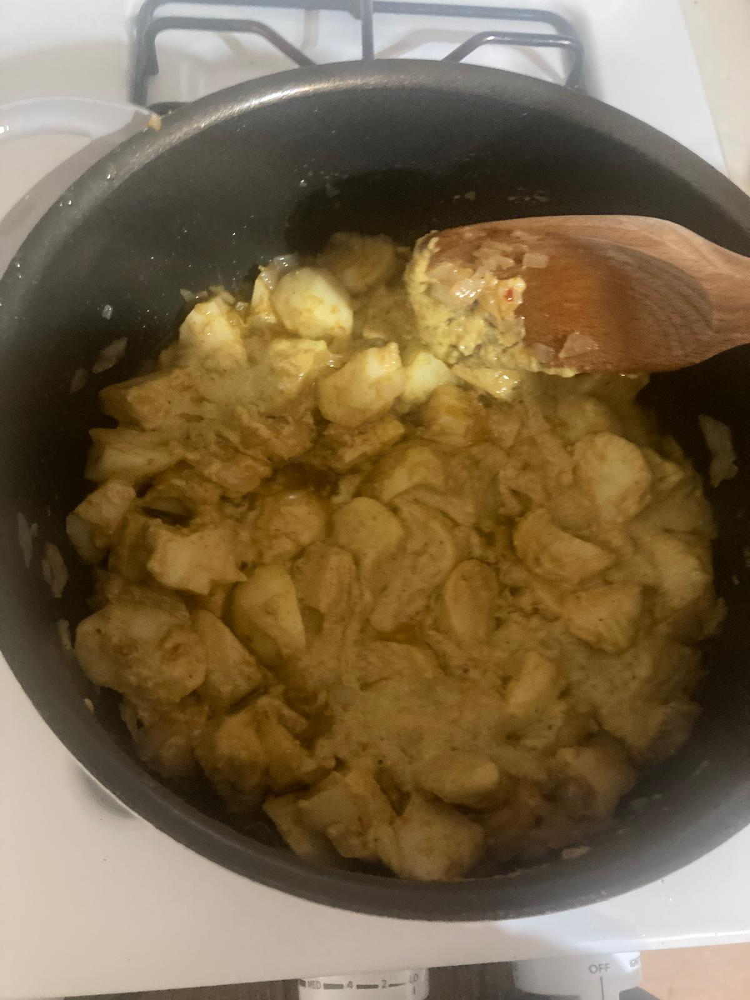 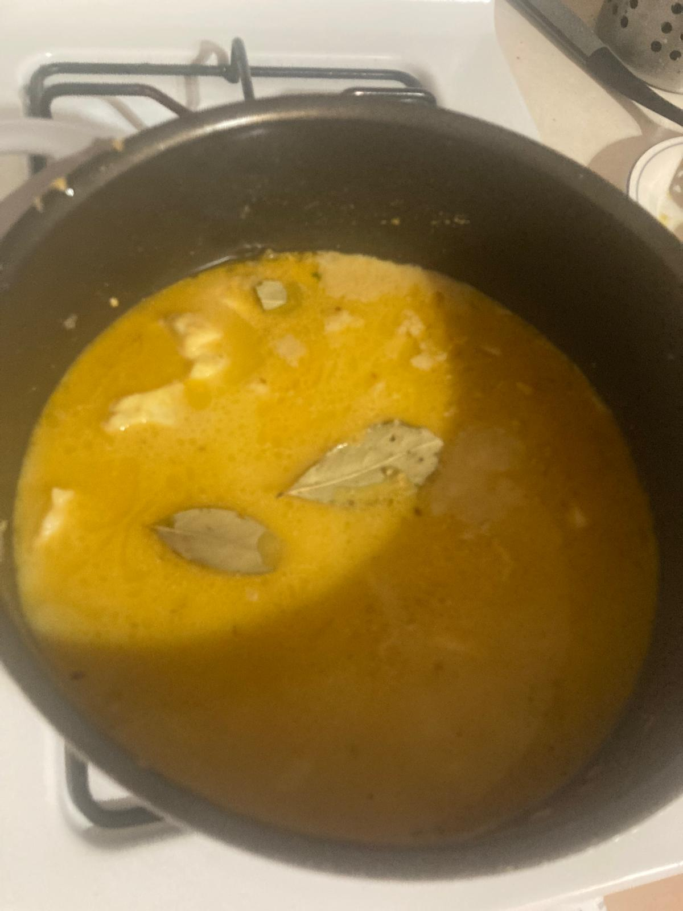 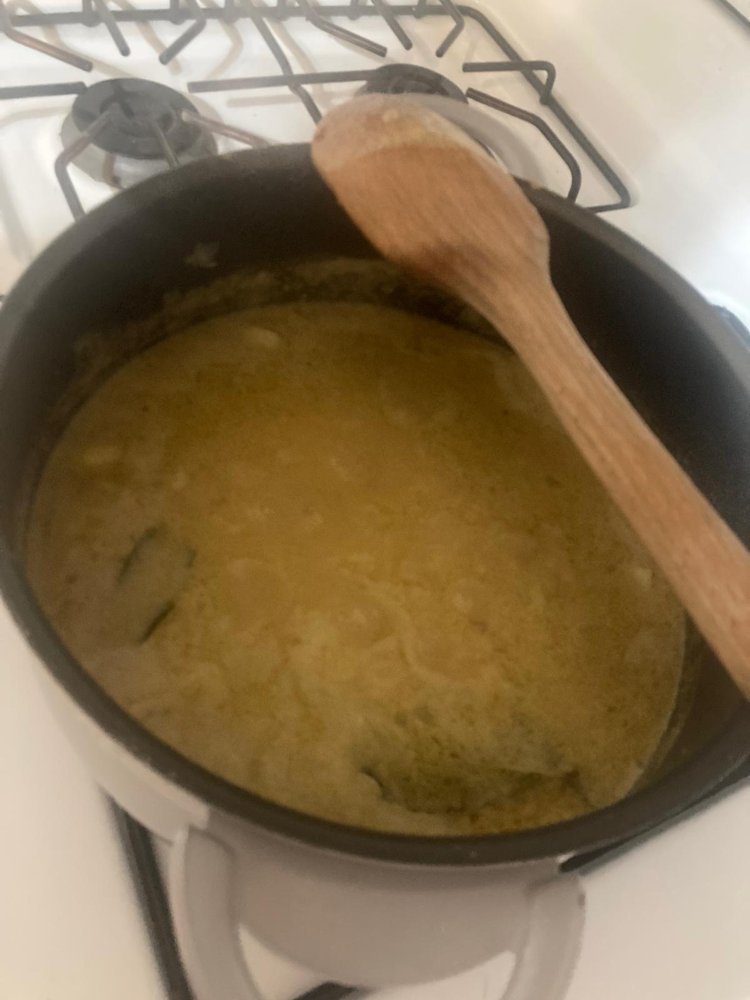 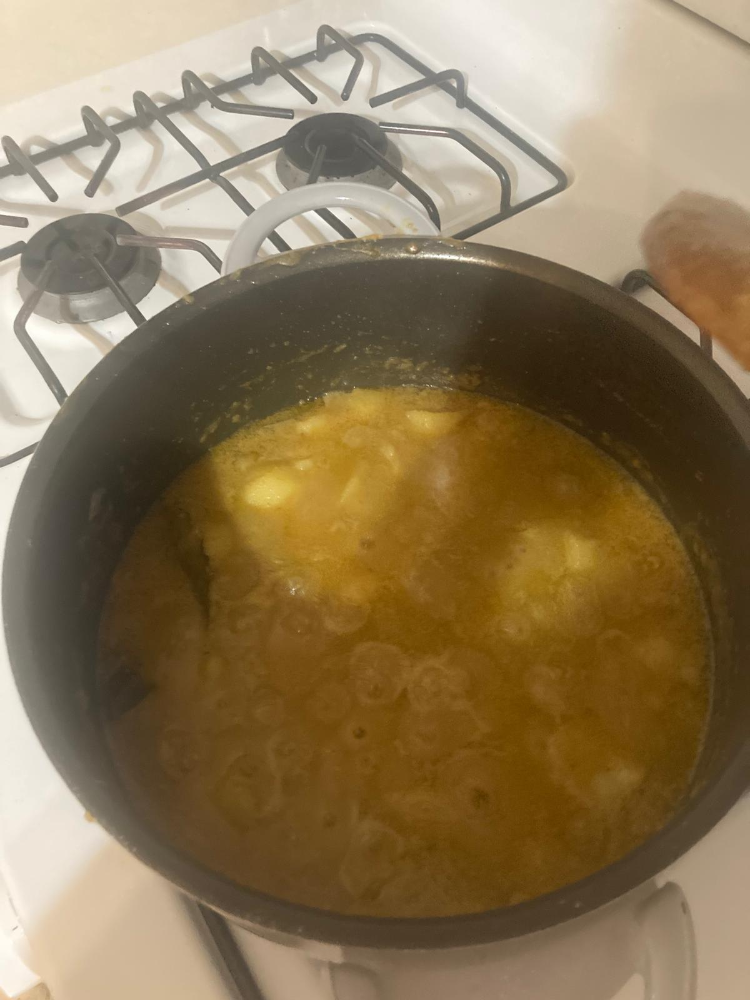 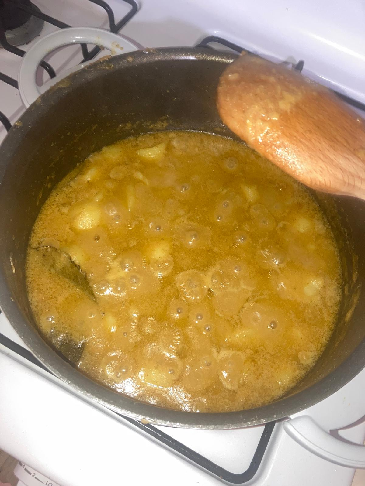
 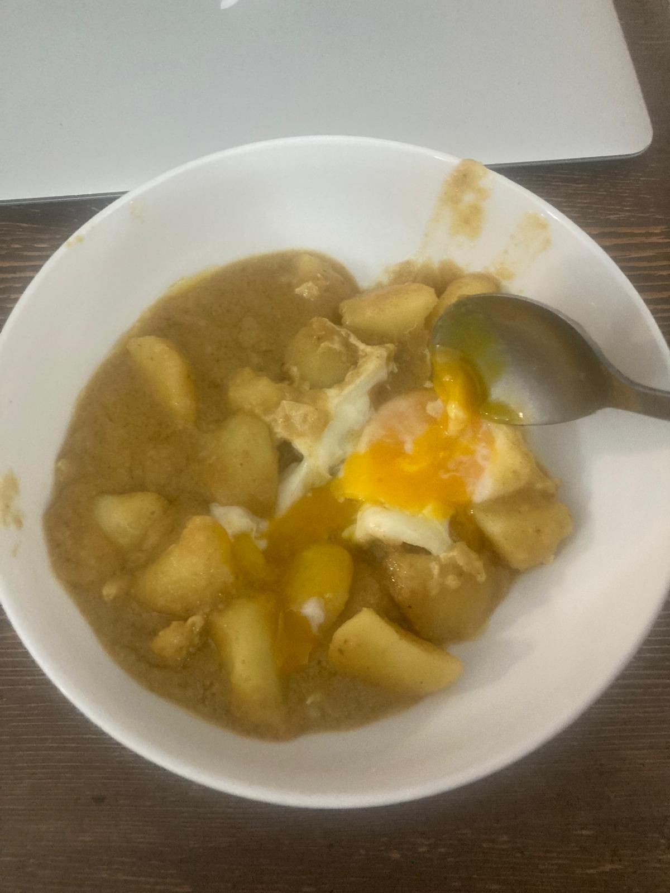
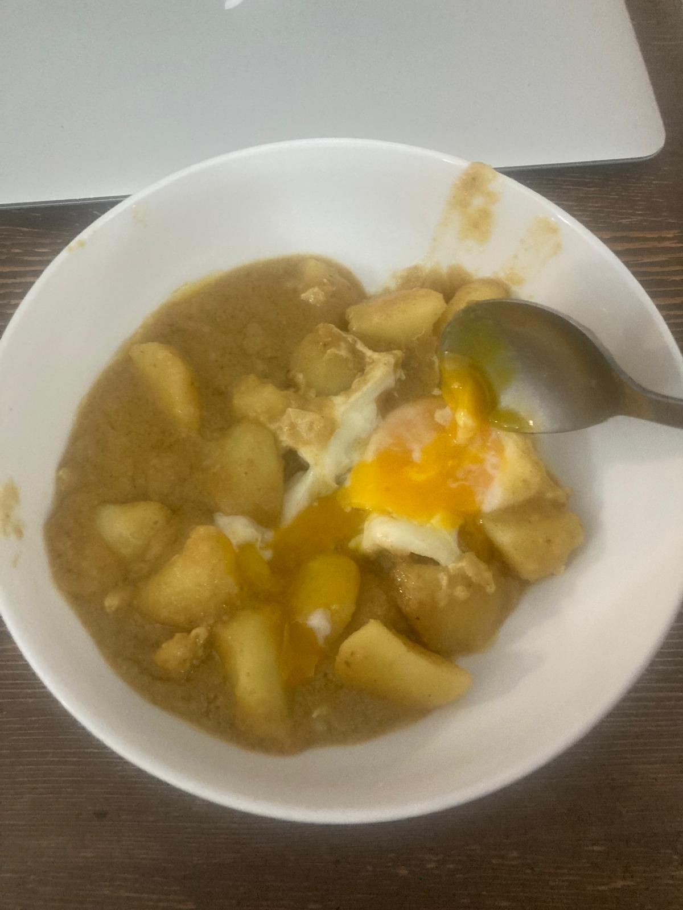